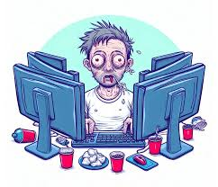

Phishing is a type of online scam that targets consumers by sending them an e-mail that appears to be from a well-known source an internet service provider, a bank, or a mortgage company, for example. It asks the consumer’s to provide personal identifying information. Then a scammer uses the information to open new accounts, or invade the consumer existing There are several tips that consumers can follow to avoid phishing scams, such as not responding to e-mails or pop-up messages that ask for personal or financial information.
Adivices for Internet users
Treat people online the same way you would treat someone face-to-face. If you wouldn’t say it or do it in person, don’t do it online. Acknowledge and accept others’ ideas. Acknowledge and accept others’ culture, religion, sexuality and gender.
Internet addiction

Internet addiction is an umbrella term that refers to the compulsive need to spend a great deal of time on the Internet,to the point where relationships, work and health are allowed to suffer.
Install software
It’s cyber security month so what better time to remind you to keep this at the front of your mind? Staying safe and secure online is so important as cybercriminals continue to create scams. It’s important to learn the signs of what may not be legit online but it’s a good idea to have the safety net of an anti-virus package that you can rely on. We’d recommend ESET. Get in touch with us if this is something you’re interested in.